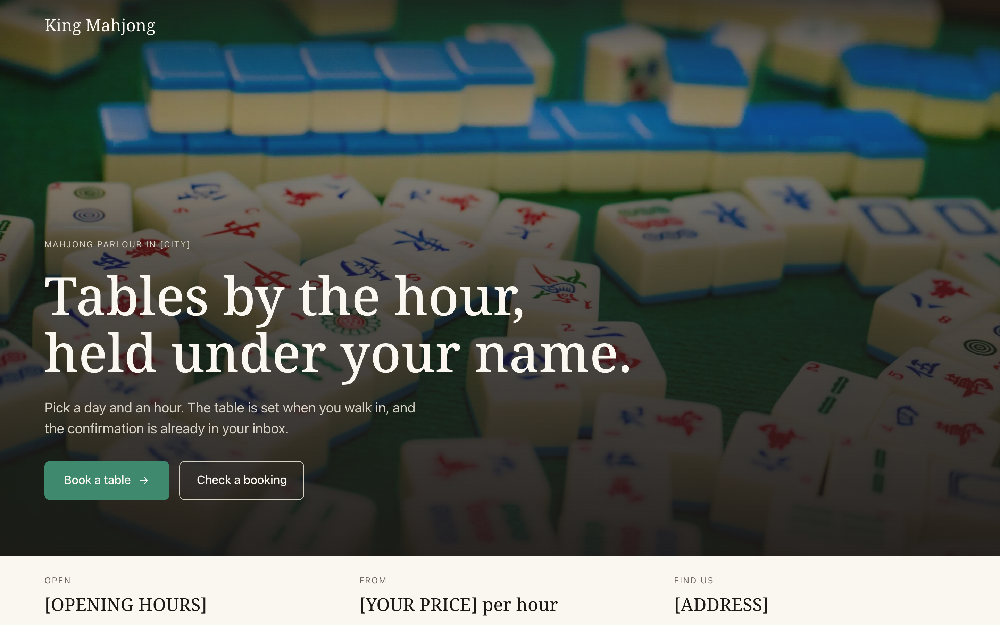
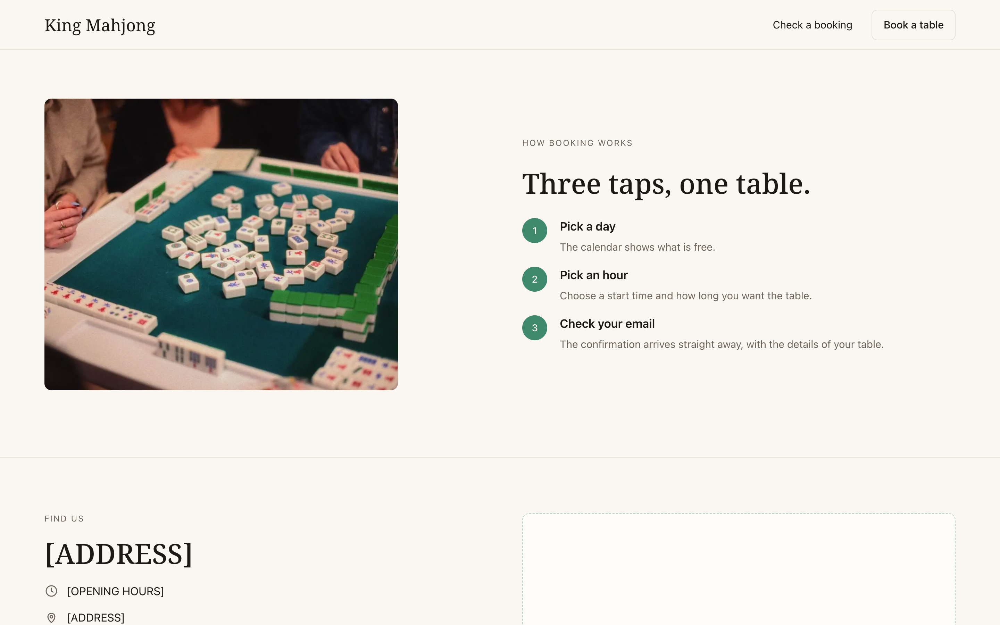
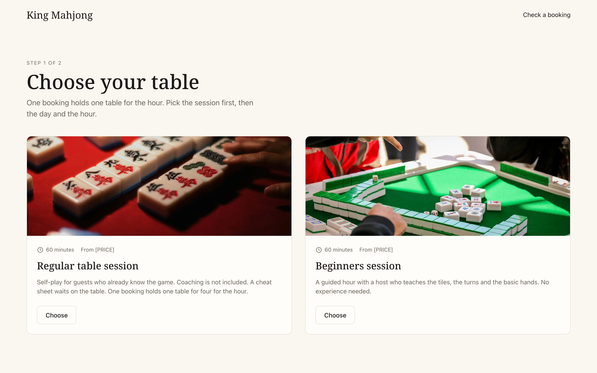
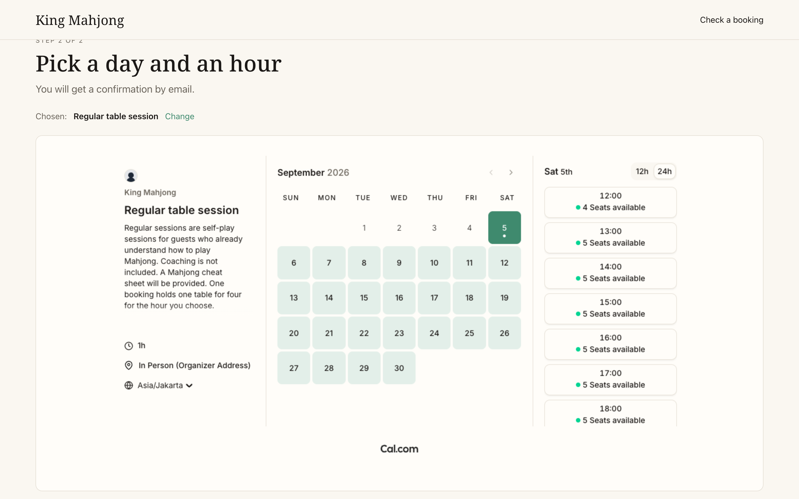
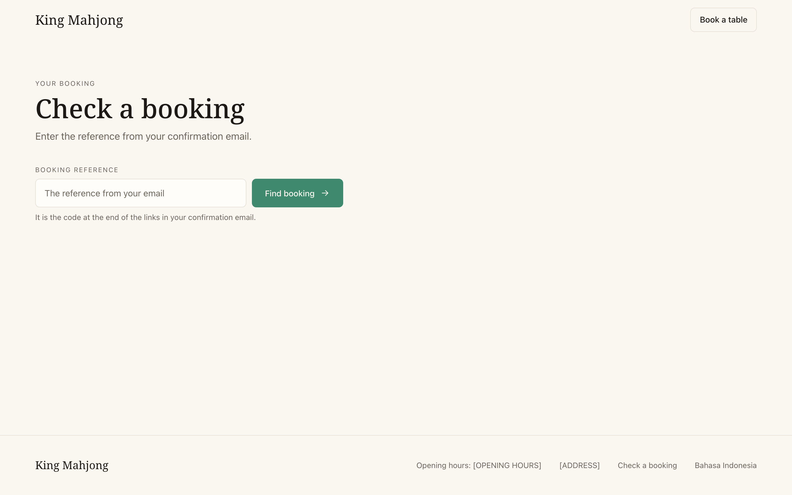

King Mahjong
Landing and booking site for a mahjong parlour — guests hold a table by the hour through an embedded calendar, then look their booking up by its reference. English and Indonesian.
The Client
A mahjong parlour that rents tables by the hour. Guests were arriving on a WhatsApp message and a promise, with nothing they could check afterwards and no calendar the venue could point at. They wanted a public site that takes the booking and confirms it, and they wanted it to stay separate from the register they use at the counter.
What It Does
The landing page states the hours, the starting price and where the venue is, then sends the guest to a two-step booking: pick a session, pick a day and an hour. A confirmation email goes out with a reference, and a second page turns that reference back into the booking — the table, the name, the day, the time, and links to reschedule.
Features
- Booking taken by an embedded Cal.com calendar, skinned to the venue's own palette
- Tables modelled as seats on the hour, so the calendar itself refuses the fifth party
- Look up a booking by its reference, read straight from Cal's public API with no key
- English and Indonesian, the first visit following the browser and the choice remembered
- Venue facts — hours, address, price, map — set by the client without touching code
- A blank venue fact shows a bracketed placeholder rather than an empty row
- Static build with no database, no accounts and no server of its own
Tech Stack
- Astro, TypeScript
- Tailwind CSS
- Cal.com (inline embed, public booking API)
- GitHub Pages
Access
Built and handed over. The venue has not published it on its own domain yet, so the screenshots come from the build rather than a live address.




